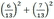

从本章开始，我们将深入研究每一种机器学习算法。我们从用于分类和回归的非参数监督学习方法、决策树和高级技术开始。我们将概述一个可以通过构建基于决策树的模型来解决的业务问题，并学习如何在 Apache Mahout、R、Julia、Apache Spark 和 Python 中实现它。
本章深入讨论了以下主题:
决策树被认为是机器学习领域中最强大和最广泛使用的建模技术之一。
决策树自然地归纳出可用于数据分类和预测的规则。以下是从构建决策树中得出的规则定义的示例:
如果(笔记本电脑型号为 x )和(由 y 制造)和(为 z 岁)和(有部分机主为 k )那么(续航时间为 n 小时)。
当仔细观察时，这些规则以简单、人类可读和可理解的格式表达。此外，这些规则可以存储在数据存储中供以后参考。下面的概念图描述了决策树的各种特征和属性，这些将在下面的部分中介绍。
决策树通过从根到叶的树形结构对实例进行分类。最重要的是，在高层次上，决策树有两种表示形式——节点和连接节点的弧线。为了做出决策，流程从根节点开始，导航到弧，直到到达叶节点，然后做出决策。树的每个节点表示一个属性的测试，分支表示属性可能取的值。
以下是决策树表示的一些特征:
下图是相同的表示:
分类树用于将给定的数据集分类。要使用分类树，目标变量的响应需要是一个分类值，如是/否、真/假。另一方面，回归树用于解决预测需求，并且总是在目标或响应变量是数值或离散值(如股票价值、商品价格等)时使用。
下图描述了决策树和相关树类别作为分类或回归树的用途:
决策树可以通过一个简单的例子和手工构建一个决策树来最好地学习。在这一节中，我们来看一个简单的例子；下表显示了现有的数据集。我们的目标是根据客户的人口统计数据，预测他们是否会接受贷款。很明显，如果我们能拿出一个规则作为这个数据集的模型，这对业务用户来说是最有用的。
根据上表，由于年龄和经验高度相关，我们可以选择忽略其中一个属性。这有助于隐含的特征选择。
案例 1:让我们开始构建决策树。首先，我们将选择按照 CCAvg(信用卡平均余额)进行拆分。
如果 CCAvg 为中，则 loan = accept 或如果 CCAvg 为高，则 loan = accept
为了使规则更加清晰，让我们添加收入属性。我们还有两条规则:
如果 CCAvg 低且收入低，则不接受贷款
如果 CCAvg 低，收入高，则接受贷款
通过结合这里的第二条规则和前两条规则，我们可以导出以下规则:
如果(CCAvg 中等)或(CCAvg 高)或(CCAvg 低，收入高)那么贷款=接受
案例 2:让我们开始使用 Family 构建决策树:
在这种情况下，只有一个规则没有给出准确的结果，因为它只有两个数据点。
因此，选择一个有效的属性来开始树会对模型的准确性产生影响。从前面的例子中，让我们列出一些构建决策树的核心规则:
决策树在机器学习领域受到青睐的原因之一是它们对错误的鲁棒性；当训练数据集中有一些未知值时，也可以使用它们(例如，收入数据不是所有记录都可用)。
给一些未知数赋值的一个有趣的方法是，根据出现次数来看，最常见的值被赋值，在某些情况下，它们可以属于同一类，如果可能的话，我们应该使它更接近准确。
还有另一种概率方法，其中预测按比例分布:
现在，将 x 的分数 pi 分配给每个后代。在节点 n 的例子中，这些概率可以基于 A 的各种值的观察频率来再次估计。
例如，让我们考虑一个布尔属性一个。假设 A 有 10 个值，其中 3 个值为真，其余 7 个值为假。所以， A(x) =真的概率是 0.3， A(x) =假的概率是 0.7。
对于 A =真，其中的分数 0.3 沿分支分布，分数 0.7 沿另一分支分布。这些概率值用于计算信息增益，并且可以在需要测试第二个缺失属性值时使用。当我们需要为新的分支填充任何未知数时，同样的方法可以应用于学习的情况。C4.5 算法使用这种机制来填充缺失值。
构建决策树的关键是知道在哪里分割它们。为此，我们需要明确以下几点:
有三种不同的方法来识别最适合的属性:
这个实体用于被称为 C4.5 的算法中。熵是数据中不确定性的度量。让我们用直观的方法来理解信息增益和熵的概念。
例如，假设正在投掷一枚硬币，有五枚硬币正面的概率分别为 0、0.25、0.5、0.75 和 1。所以，如果我们认为哪一个具有最高的不确定性，哪一个具有最低的不确定性，那么 0 或 1 的情况将是最低的确定性，当它是 0.5 时最高。下图描述了相同的表示:
H = -∑p i log2p i
这里，p i 是特定状态的概率。
如果一个系统有四个概率为 1/2、1/4、1/5 和 1/8 的事件，则表示该系统的总熵，如下所示:
h =-1/2 log2(1/2)-1/4 log2(1/4)-1/5 log2(1/5)-1/8 log2(1/8)
在 C5.0 和 C4.5 算法(ID3)的原始版本中，根节点的选择基于如果选择该节点，总熵减少多少。这就是所谓的信息增益。
信息增益=拆分前系统的熵-拆分后系统的熵
拆分前系统中的熵如下所示:
使用 A 将 D 分割成 v 分区对 D 进行分类后的熵:
现在让我们计算从数据中获得的信息:
分割前的熵如下:
这是显而易见的，也是意料之中的，因为我们几乎有一半的数据。现在让我们看看哪个属性给出了最好的信息增益。
如果分割基于 CCAvg 和系列，熵计算可以如下所示。总熵被加权为所创建的每个节点的熵的总和。
信息增益如下:
基尼指数是一个通用的划分标准。它以意大利统计学家和经济学家科拉多·基尼的名字命名。基尼指数用于衡量两个随机项目属于同一类别的概率。在真实数据集的情况下，这个概率值是 1。节点的基尼系数是类别比例的平方和。一个节点有两个类，每个类的得分为 0.52 + 0.52 = 0.5 。这是因为随机挑选同一个类的概率是 1/2。现在，如果我们对数据集应用基尼指数，我们得到以下结果:
原始基尼系数=  = 0.502959
当与 CCAvg 和家庭分开时，基尼系数变化如下:
C4.5 相比 ID3 的另一个改进是决定属性的因素是增益比。增益比是信息增益与信息量的比值。给出最大增益比的属性是用于分割它的属性。
让我们用一个非常简单的例子来做一些计算，以强调为什么增益比是一个比信息增益更好的属性:
因变量是他们是否在特定情况下结婚。我们假设在这种情况下，没有男人结婚。然而，除了最后一名妇女(60 名妇女)，所有妇女都已结婚。
因此，直觉上，规则必须如下:
让我们系统地解决这个问题，以深入了解各种参数。首先，让我们将数据分成两半，作为训练和测试数据。因此，我们的训练集由最后 20 名男性(所有昏迷且年龄在 21-40 岁之间)和最后 30 名女性(所有已婚且年龄在 71-99 岁之间，除了最后一名)组成。测试包含所有女人都结婚的另一半。
增益比要求测量信息内容。
信息内容定义为-fIlog2fIT17】。注意，这里我们没有考虑因变量的值。我们只想知道一个州的成员数除以总成员数的分数。
性别的信息内容是它只有两种状态；男 20，女 30。因此，性别的信息量为 2/5*LOG(2/5，2)-3/5*LOG(3/5，2)=0.9709 。
信息年龄的内容是总共有 49 个州为年龄。对于只有一个数据点的状态，信息内容为 -(1/50)*log(1/50，2) = 0.1129 。
一个数据点有 48 个这样的状态。所以，它们的信息量是(0.1129*48)，5.4192。在最后一个状态中，有两个数据点。所以，它的信息量是 -(2/50 * LOG(2/50，2)) = 0.1857 。该年龄的总信息量是 5.6039。
性别的增益比=性别的信息增益/性别的信息内容= 0.8549/0.9709 = 0.8805。
年龄的增益比= 0.1680
所以，如果我们考虑增益比，我们得到性别是一个更合适的衡量标准。这与直觉一致。现在假设我们使用了增益比并构建了树。我们的规则是，如果性别是男性，这个人就是未婚，如果是女性，这个人就是已婚。
每个分支都长得足够深，可以通过决策树算法完美地对训练样本进行分类。这可能是一种可以接受的方法，当数据中有一些噪声时，大多数情况下会产生问题。如果训练数据集太小，不能代表实际数据集的真实情况，决策树可能会过度拟合训练示例。
有许多方法可以避免决策树学习中的过拟合。以下是两种不同的情况:
虽然第一种情况可能看起来更直接，但第二种情况对过度拟合的树进行后期修剪在现实中更成功。原因是很难知道什么时候停止种树。无论采用何种方法，更重要的是确定标准，以确定最终合适的树大小。
以下是找到正确树大小的几种方法:
减少错误修剪(D):我们通过删除以节点为根的子树来在节点处进行修剪。我们使该节点成为一个叶子(带有相关例子的多数标签)；算法如下所示:
规则后剪枝是一种多常用的方法，是一种高度精确的假设技术。C4.5 中使用了这种修剪方法的一种变体。
以下是规则后清理过程的步骤:
以下是基于规则的修剪的优点及其转换为规则的需要:
到目前为止，我们已经看到了决策树是如何通过划分节点上的数据并将值与常数进行比较来描述的。表示决策树的另一种方式是可视化和图形化表示。例如，我们可以在二维空间中选择两个输入属性，然后将一个属性的值与常量进行比较，并将数据的分割显示在平行轴上。我们也可以用属性的线性组合来比较两个属性，而不是平行于轴的超平面。
为给定数据构建多个决策树是可能的。识别最小且完美的树的过程称为最小一致假设。让我们用两个论点来看看为什么这是最好的决策树:
奥卡姆剃刀简单；当有两种方法来解决一个问题并且都给出相同的结果时，以最简单的方法为准。
在数据挖掘分析中，人们很容易陷入复杂方法和大量计算的陷阱。因此，将奥卡姆所采用的推理路线内在化是至关重要的。总是选择一个决策树，它具有大小和错误的最佳组合。
有很多决策树归纳方法。在所有的方法中，C4.5 和 CART 是采用最多或最流行的方法。在本节中，我们将深入讨论这些方法，并简要介绍其他方法。
CART 代表分类和回归树(Breiman 等人，1984)。CART 创建二叉树。这意味着总有两个分支可以从一个给定的节点出现。CART 算法的哲学是遵循一个良好标准，这是关于选择最好的可能分区。此外，随着树的增长，采用了成本复杂性修剪机制。CART 使用基尼指数来选择适当的属性或分割标准。
使用 CART，可以提供先验概率分布。我们可以使用 CART 生成回归树，反过来帮助预测一个类的实数。预测是通过应用节点的加权平均值来完成的。CART 识别最小化预测平方误差(即最小平方偏差)的分割。
下图中的 CART 描述与上一节中引用的示例相同，其中演示了决策树的构建:
与 CART 类似，C4.5 是一种决策树算法，主要的区别是它可以生成比二叉树更多的树，这意味着支持多路分裂。对于属性选择，C4.5 使用信息增益度量。如前一节所述，具有最大信息增益(或最低熵减)值的属性有助于用最少的数据量实现更接近准确的分类。C4.5 的一个主要缺点是需要大量内存和 CPU 来生成规则。C5.0 算法是 1997 年推出的 C4.5 的商业版本。
C4.5 是 ID3 算法的发展。增益比测量用于识别分裂标准。当分割数量达到作为阈值的边界条件定义时，分割过程停止。在树的这个生长阶段之后，修剪就完成了，并且遵循基于错误的修剪方法。
下面是构建决策树的 C4.5 方法的一个示例，该示例与上一节中使用的示例相同:
在本节中，我们将探讨一些我们面临的重要特殊情况和特殊类型的决策树。这些在解决特殊类型的问题时变得很方便。
倾斜树用于数据极其复杂的情况。如果属性是 x1、x2 和 x3…xn ，那么 C4.5 和 CART 测试标准为 x1 >某个值或 x2 <某个其他值，等等。这种情况下的目标是在每个节点找到一个要测试的属性。这些是图形平行轴分割，如下图所示:
显然，我们需要建造巨大的树。至此，我们来学习一个数据挖掘行话，叫做超平面。
在一个 1 D 问题中，一个点对空间进行分类。在 2 D 中，一条线(直线或曲线)对空间进行分类。在 3 D 问题中，一个平面(直线或曲线)对空间进行分类。在更高维度的空间中，我们想象一个像东西一样的平面对空间进行分割分类，称之为超平面。这就是下图所示的:
因此，传统的决策树算法会产生轴平行超平面来分割数据。如果数据很复杂，这可能会很麻烦。如果我们可以构造斜面，可解释性可能会下降，但我们可能会大大减少树的大小。因此，我们的想法是从以下方面改变测试条件:
xi > K 或< K to a1x1+ a2x2+ … + c > K 或< K
These oblique hyperplanes can at times drastically reduce the length of the tree. The same data shown in figure 2 is classified using oblique planes in the figure here:
这些特殊化的树在维度过多的时候使用。我们已经在机器学习介绍章节中学习了关于维数灾难的知识。维数灾难的基本前提是高维数据带来了复杂性。尺寸和特征越多，出错的可能性也越高。在我们深入研究随机森林之前，让我们了解一下 Boosting 的概念。关于 boosting 方法的更多细节将在第 13 章、集合学习中介绍。在随机森林的情况下，boosting 的应用是关于如何将单个树方法结合在一起，以查看关于准确性的结果的提升。
随机森林通过包含更多数量的决策树来扩展决策树。这些决策树是由随机选择的数据(样本)和随机选择的属性子集组合而成的。下图描述了随机选择数据集来构建每个决策树:
制作多个决策树所需的另一个变量输入是属性的随机子集，如下图所示:
因为每棵树都是使用随机数据集和随机变量集构建的，所以这些树被称为随机树。此外，许多这样的随机树定义了一个随机森林。
随机树的结果基于两个激进的信念。一个是每棵树对数据的最大部分进行精确预测。第二，错误发生在不同的地方。因此，平均而言，在决策树中进行一次结果投票以得出一个结果。
没有足够的观测值来获得好的估计，这导致了稀疏性问题。空间密度呈指数增长有两个重要原因，一是维数的增加，二是数据中等距点的增加。大多数数据都在尾部。
为了估计给定精度的密度，下表显示了样本大小如何随着维度的增加而增加。随后的计算表显示了多元正态分布估计的均方误差是如何随着维数的增加而增加的(正如 Silverman 所证明的，并通过此处给出的公式进行计算):
随机森林是决策树的一个重要扩展，非常容易理解并且非常有效，尤其是在处理高维空间的时候。当原始数据有多个维度时，我们随机选取维度(列)的一个小子集并构建一棵树。我们让它一路生长，没有修剪。现在，我们重复这个过程，每次用不同的属性集构建数百棵树。
对于预测，一个新的样本被推下树。训练样本的新标签被分配给它结束的终端节点。对组中的所有树重复该过程，并且所有树的平均投票被报告为随机森林预测。